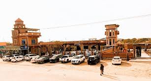
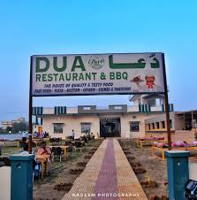
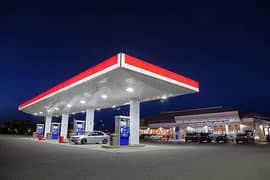

Top Restaurants in Umerkot
Umerkot offers a variety of dining experiences, from traditional Pakistani dishes to international cuisines. Whether you're looking for a fine dining experience or a casual local eatery, Umerkot has it all!
Popular Dining Spots

The Megh Malhaar Restaurant
Known for its delicious kebabs and grilled specialties, The Megh Malhaar offers an authentic taste of Pakistani BBQ.
Location: Kantio Road, Umerkot
Cuisine: Pakistani, BBQ

Dua Restaurant
A modern restaurant serving a variety of spicy curries, traditional stews, and vegetarian options.
Location: Mirpurkhas–Umerkot Road, Umerkot
Cuisine: Pakistani

Sodha Restaurants
Perfect for those who enjoy international dishes. Sodha offers both Asian and Western food in a comfortable, family-friendly atmosphere.
Location: Near Akheraj Village, Umerkot
Cuisine: Continental, Asian
Dining Tips in Umerkot
- Many restaurants offer outdoor seating to enjoy the warm weather.
- If you’re unfamiliar with local dishes, ask the staff for recommendations.
- Don’t forget to try traditional sweets such as "Gulab Jamun" and "Kheer" for dessert.